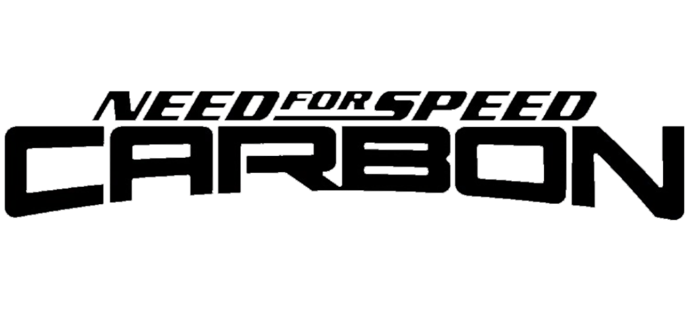
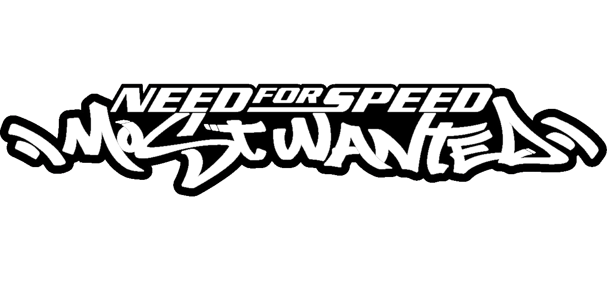
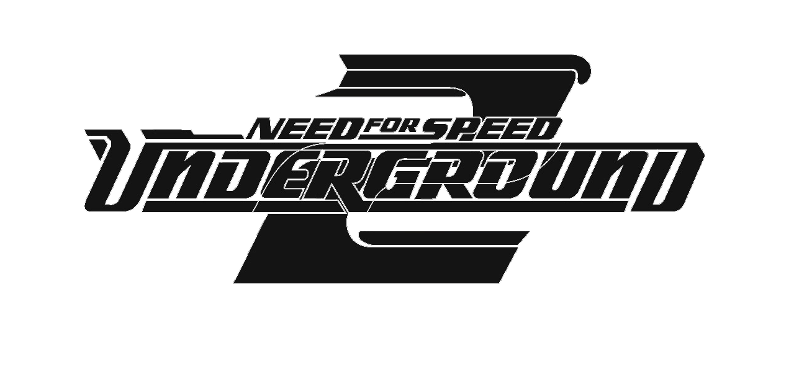
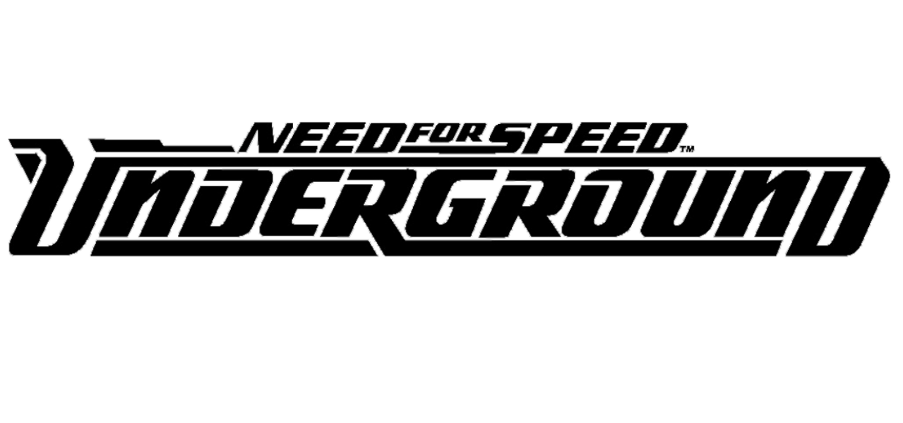
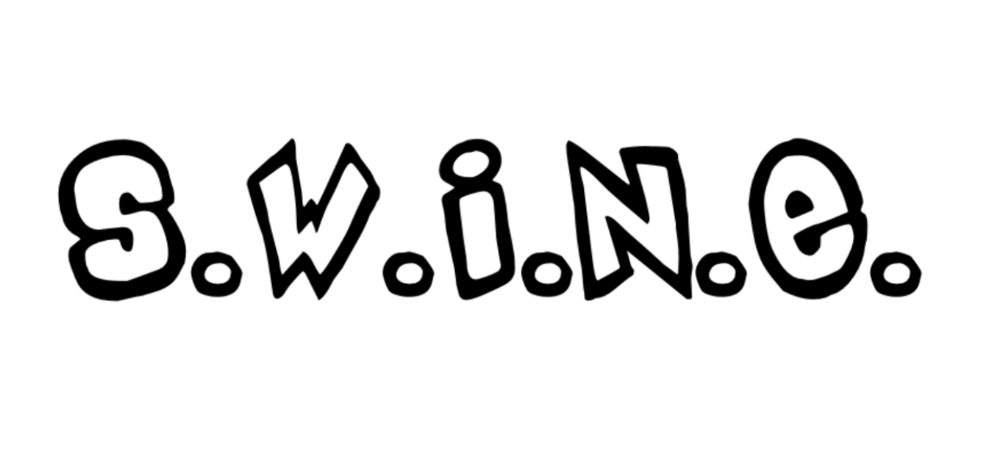

Downloads! NEED FOR SPEED ™  Release / Build Source Code You must have 1.4 patch and(Optional) no-cd exe from somewhere  Release / Build Source Code You must have 1.3 patch and(Optional) no-cd exe from somewhere  Release / Build Source Code You must have 1.2 US patch and(Optional) no-cd exe from somewhere  Release / Build Source Code You must have v1.4.0 patch? (US) and(Optional) no-cd exe from somewhere  Release / Build Source Code You must have 1.9 patch (EN)See Wiki For more info